Conversation milestones
Roarer
Rocky’s voice grows from a first call to a sky-splitting roar.
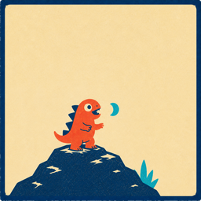
First Roar25 conversation turns
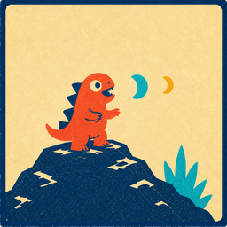
Echo Call100 conversation turns
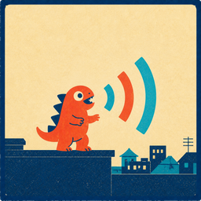
City Voice250 conversation turns
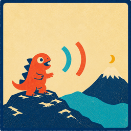
Mountain Caller500 conversation turns
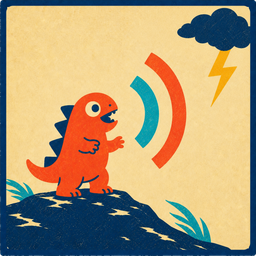
Thunder Voice1,000 conversation turns
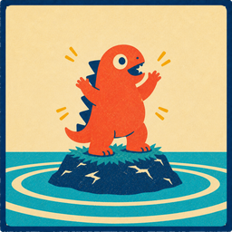
Island Shaker2,500 conversation turns
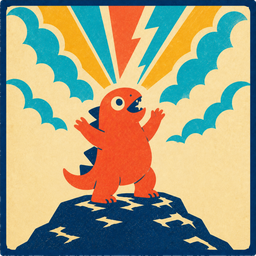
Sky Splitter5,000 conversation turns
Review milestones
Card Muncher
A small study snack grows into an endless review feast.
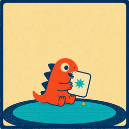
First Nibble25 reviews
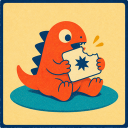
Quick Bite100 reviews
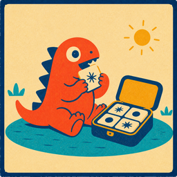
Bento Break500 reviews
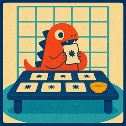
Full Feast1,000 reviews
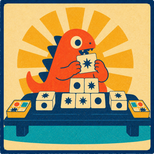
Banquet Beast5,000 reviews
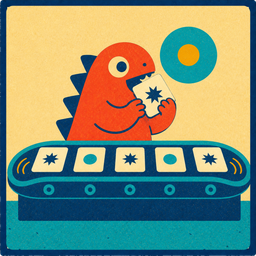
Bottomless10,000 reviews
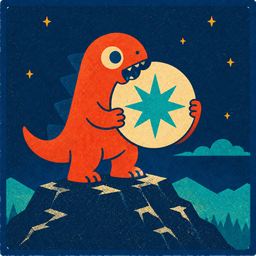
Moon Muncher25,000 reviews
One-year memory stability
Matsuri Light
A single ember grows into a lantern festival that meets the sunrise.
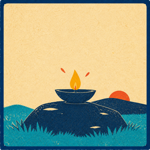
First Ember25 one-year-stable cards
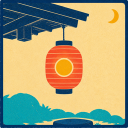
Paper Glow100 one-year-stable cards
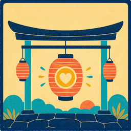
Lantern Heart250 one-year-stable cards
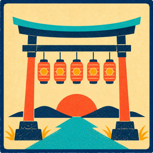
Festival Gate500 one-year-stable cards
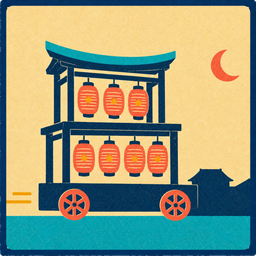
Night Parade1,000 one-year-stable cards
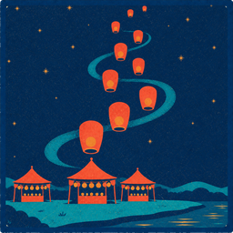
Sky of Lanterns2,500 one-year-stable cards
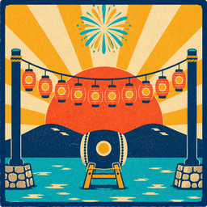
Eternal Sunrise5,000 one-year-stable cards
In-progress shelf
No more lonely badge
Earned art stays vivid; the most likely next milestones fill the row in a deterministic locked state.
First RoarEarned · Aug 12
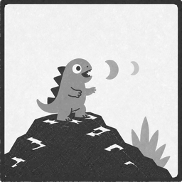
Echo Call75 more conversation turns
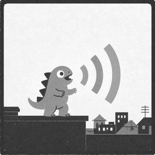
City Voice225 more conversation turns